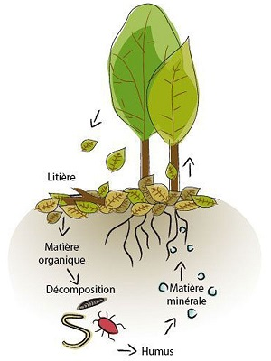

La chose la plus précieuse qu’un jardinier puisse posséder, c’est la terre sur laquelle il lui est permis de cultiver bien des merveilles. Sans elle rien n’est possible en plein air. C’est en effet le support universel de nos cultures au sens propre comme au figuré.
Constatation 1
un sol en santé est d’abord un sol grouillant de vie, qui nourrit et abreuve efficacement les plantes, avec un minimum d’engrais et sans pesticides il suffit d'enrichir votre sol en incorporant de la matière organique de manière constante afin de nourrir les micro-organismes qui y habitent. Toute cette vie améliorera la stabilité du sol et la gestion de l’eau de surface.
Constatation 2
Augmentez d’un seul point de pourcentage le taux de matière organique de votre sol et il retiendra 150 000 litres d’eau à l’hectare de plus.
Constatation 3
Les insectes sont très bénéfiques au sol à son équilibre et à son aération.
La haie fruitière
Dans les régions et les jardins les plus exposés au vent, la plantation d'une haie brise-vent constitue une bonne protection pour le jardin. Le vent peut en effet devenir destructeur pour les plantes : desséchées, brûlées voire arrachées par son action violente, celles-ci ont besoin d'être mises à l'abri.
La haie fruitière
Une haie, c'est bien. Une haie fruitière, c'est mieux ! Remplissant le même rôle qu'une haie décorative, une haie composée d'arbres fruitiers et d'arbustes à petits fruits a en outre l'avantage d'être gourmande. Quels arbres et arbustes choisir ? Comment planter ? Voici quelques conseils...
Comment reconnaitre un bon sol?
Le sol idéal est fait de petites boulettes, des agrégats, qui retiennent une partie de l’eau et laissent passer l’excédent.
Si, sous l’effet d’un couteau, la terre se détache en blocs plutôt qu’en granules, c’est que le sol est trop compact, il manque d’oxygène et les microorganismes étouffent. Si la terre tombe en poussière, c’est qu’au contraire ses particules ne se sont pas assez soudées et ne retiennent pas l’eau, les microorganismes ont soif.